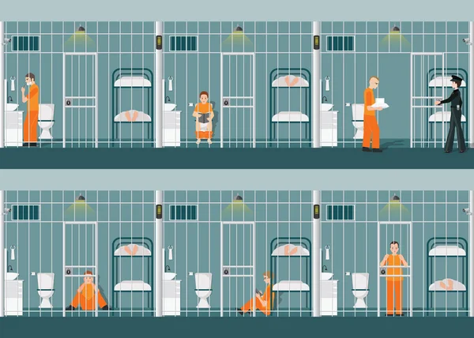

Bienvenido al Sistema de Gestión Carcelaria
Por favor seleccione una de las pestañas ubicadas en la barra de navegación para continuar.
¿Qué funciones tiene este sistema carcelario?

Gestión de Reclusos
Registra, edita y elimina información de los reclusos, incluyendo sus delitos, condenas y fecha de ingreso.
Control de Visitas
Administra las visitas de los familiares a los reclusos, registrando al visitante y el recluso visitado.

Gestión de Personal
Gestiona los datos del personal de la cárcel, incluyendo roles como guardias, médicos y psicólogos.

Reportes de Actividades
Genera reportes sobre actividades diarias, eventos y otras actividades dentro del penal.